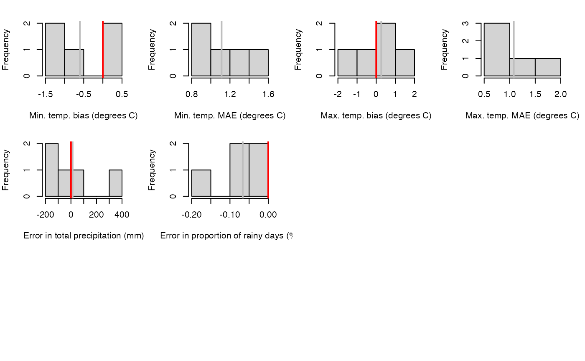

interpolation.cv.RdFunction interpolation.calibration determines optimal interpolation parameters 'N' and 'alpha' for a given meteorological variable. Optimization is done by minimizing mean absolute error (MAE) (Thornton et al. 1997). Function interpolation.cv calculates average mean absolute errors (MAE) for the prediction period of an object of class 'MeteorologyInterpolationData'. Function summary.interpolation.cv returns a data.frame with cross-validation summaries and plot.interpolation.cv plots cross-validation results. In both calibration and validation procedures, predictions for each weather station are made using a leave-one-out procedure (i.e. after excluding the station from the predictive set).
interpolation.calibration(object, stations = NULL, variable="Tmin", N_seq = seq(5,30, by=5), alpha_seq = seq(0.25,10, by=0.25), verbose = FALSE) interpolation.calibration.fmax(object, stations = NULL, fmax_seq = seq(0.05,0.95, by=0.05), verbose = FALSE) interpolation.cv(object, stations = NULL, verbose = FALSE) # S3 method for interpolation.cv summary(object, ...) # S3 method for interpolation.cv plot(x, type = "stations", ...)
| object | In the case of function |
|---|---|
| stations | A numeric vector containing the indices of stations to be used to calculate mean absolute errors (MAE) in the calibration or cross-validation analysis. All the stations with data are included in the training set but predictive MAE are calculated for the 'stations' subset only. |
| variable | A string indicating the meteorological variable for which interpolation parameters 'N' and 'alpha' will be calibrated. Accepted values are 'Tmin' (for minimum temperature), 'Tmax' (for maximum temperature), 'Tdew' (for dew-point temperature), 'PrecEvent' (for precipitation events),'PrecAmount' (for regression of precipitation amounts),'Prec' (for precipitation with the same values for precipitation events and regression of precipitation amounts). |
| N_seq | Set of average number of points to be tested. |
| alpha_seq | Set of alpha values to be tested. |
| fmax_seq | Set of f_max values to be tested. |
| verbose | A logical flag to generate additional console output. |
| x | A S3 object of class |
| type | A string of the plot type to be produced (either "stations" or "dates"). |
| ... | Additional parameters passed to summary and plot functions. |
Function interpolation.calibration returns an object of class 'interpolation.calibration' with the following items:
MAE: A numeric matrix with the mean absolute error values (averaged across stations) for each combination of parameters 'N' and 'alpha'.
minMAE: Minimum MAE value.
N: Value of parameter 'N' corresponding to the minimum MAE.
alpha: Value of parameter 'alpha' corresponding to the minimum MAE.
Observed: A matrix with observed values.
Predicted: A matrix with predicted values for the optimum parameter combination.
Function interpolation.cv returns a list of class 'interpolation.cv' with the following items:
stations: A data frame with as many rows as weather stations and the following columns:
MinTemperature-Bias: Bias (in degrees), calculated over the prediction period, of minimum temperature estimations in weather stations.
MinTemperature-MAE: Mean absolute errors (in degrees), averaged over the prediction period, of minimum temperature estimations in weather stations.
MaxTemperature-Bias: Bias (in degrees), calculated over the prediction period, of maximum temperature estimations in weather stations.
MaxTemperature-MAE: Mean absolute errors (in degrees), averaged over the prediction period, of maximum temperature estimations in weather stations.
Precipitation-Total: Difference in the total precipitation of the studied period.
Precipitation-DPD: Difference in the proportion of days with precipitation.
Precipitation-Bias: Bias (in mm), calculated over the days with precipitation, of precipitation amount estimations in weather stations.
Precipitation-MAE: Mean absolute errors (in mm), averaged over the days with precipitation, of precipitation amount estimations in weather stations.
RelativeHumidity-Bias: Bias (in percent), calculated over the prediction period, of relative humidity estimations in weather stations.
RelativeHumidity-MAE: Mean absolute errors (in percent), averaged over the prediction period, of relative humidity estimations in weather stations.
Radiation-Bias: Bias (in MJ/m2), calculated over the prediction period, of incoming radiation estimations in weather stations.
Radiation-MAE: Mean absolute errors (in MJ/m2), averaged over the prediction period, of incoming radiation estimations in weather stations.
dates: A data frame with as many rows as weather stations and the following columns:
MinTemperature-Bias: Daily bias (in degrees), averaged over the stations, of minimum temperature estimations.
MinTemperature-MAE: Daily mean absolute error (in degrees), averaged over the stations, of minimum temperature estimations.
MaxTemperature-Bias: Daily bias (in degrees), averaged over the stations, of maximum temperature estimations.
MaxTemperature-MAE: Daily mean absolute error (in degrees), averaged over the stations, of maximum temperature estimations.
Precipitation-Bias: Daily bias (in mm), averaged over the stations, of precipitation amount estimations.
Precipitation-MAE: Daily mean absolute error (in mm), averaged over the stations, of precipitation amount estimations.
RelativeHumidity-Bias: Daily bias (in percent), averaged over the stations, of relative humidity estimations.
RelativeHumidity-MAE: Daily mean absolute error (in percent), averaged over the stations, of relative humidity estimations.
Radiation-Bias: Daily bias (in MJ/m2), averaged over the stations, of incoming radiation estimations.
Radiation-MAE: Daily mean absolute errors (in MJ/m2), averaged over the stations, of incoming radiation estimations.
MinTemperature: A data frame with predicted minimum temperature values.
MinTemperatureError: A matrix with predicted minimum temperature errors.
MaxTemperature: A data frame with predicted maximum temperature values.
MaxTemperatureError: A matrix with predicted maximum temperature errors.
Precipitation: A data frame with predicted precipitation values.
PrecipitationError: A matrix with predicted precipitation errors.
RelativeHumidity: A data frame with predicted relative humidity values.
RelativeHumidityError: A matrix with predicted relative humidity errors.
Radiation: A data frame with predicted radiation values.
RadiationError: A matrix with predicted radiation errors.
Thornton, P.E., Running, S.W., 1999. An improved algorithm for estimating incident daily solar radiation from measurements of temperature, humidity, and precipitation. Agric. For. Meteorol. 93, 211–228. doi:10.1016/S0168-1923(98)00126-9.
De Caceres M, Martin-StPaul N, Turco M, Cabon A, Granda V (2018) Estimating daily meteorological data and downscaling climate models over landscapes. Environmental Modelling and Software 108: 186-196.
Miquel De Cáceres Ainsa, CREAF
data(exampleinterpolationdata) #Calibration procedure precEv_cal = interpolation.calibration(exampleinterpolationdata, variable="PrecEvent", stations = 1:5, N_seq=c(5,10,15), alpha_seq=seq(0.25,1.0, by=0.25), verbose = TRUE)#> Total number of stations: 38 #> Number of stations with available data: 16 #> Number of stations used for MAE: 5 #> Number of parameter combinations to test: 12 #> #> Evaluation of parameter combinations... #> N: 5 alpha: 0.25 MAE = 0.0895447403786471 #> N: 5 alpha: 0.5 MAE = 0.0889836492139592 #> N: 5 alpha: 0.75 MAE = 0.0901869217409675 #> N: 5 alpha: 1 MAE = 0.0911038160766583 #> N: 10 alpha: 0.25 MAE = 0.0958862948272703 #> N: 10 alpha: 0.5 MAE = 0.0968173564162686 #> N: 10 alpha: 0.75 MAE = 0.0988071801268628 #> N: 10 alpha: 1 MAE = 0.0982699429850222 #> N: 15 alpha: 0.25 MAE = 0.0941500173316747 #> N: 15 alpha: 0.5 MAE = 0.0945582680083739 #> N: 15 alpha: 0.75 MAE = 0.0949859235219239 #> N: 15 alpha: 1 MAE = 0.0951681828290314 #> #> Minimum MAE value: 0.0889836492139592 N: 5 alpha: 0.5precAm_cal = interpolation.calibration(exampleinterpolationdata, variable="PrecAmount", stations = 1:5, N_seq=c(5,10,15), alpha_seq=seq(0.25,1.0, by=0.25), verbose = TRUE)#> Total number of stations: 38 #> Number of stations with available data: 16 #> Number of stations used for MAE: 5 #> Number of parameter combinations to test: 12 #> #> Evaluation of parameter combinations... #> N: 5 alpha: 0.25 MAE = 0.273167151065456 #> N: 5 alpha: 0.5 MAE = 0.272226669811487 #> N: 5 alpha: 0.75 MAE = 0.271176037084119 #> N: 5 alpha: 1 MAE = 0.270199795609907 #> N: 10 alpha: 0.25 MAE = 0.258270974301504 #> N: 10 alpha: 0.5 MAE = 0.257332263984421 #> N: 10 alpha: 0.75 MAE = 0.256377607920915 #> N: 10 alpha: 1 MAE = 0.255466858038992 #> N: 15 alpha: 0.25 MAE = 0.260453126318062 #> N: 15 alpha: 0.5 MAE = 0.259086237248335 #> N: 15 alpha: 0.75 MAE = 0.258073663584152 #> N: 15 alpha: 1 MAE = 0.25718075870868 #> #> Minimum MAE value: 0.255466858038992 N: 10 alpha: 1#Set 'alpha' and 'N' parameters to values found in calibration exampleinterpolationdata@params$N_PrecipitationEvent = precEv_cal$N exampleinterpolationdata@params$alpha_PrecipitationEvent = precEv_cal$alpha exampleinterpolationdata@params$N_PrecipitationAmount = precAm_cal$N exampleinterpolationdata@params$alpha_PrecipitationAmount = precAm_cal$alpha #Run cross validation cv = interpolation.cv(exampleinterpolationdata, stations = 1:5, verbose = TRUE)#> Station #1 C7 #> Station #2 C8 #> Station #3 CA #> Station #4 VD #> Station #5 VP#> n r MAE sd.station.MAE #> MinTemperature 7272 0.9806085 1.1129706 0.2912159 #> MaxTemperature 7269 0.9863357 1.0803430 0.5960223 #> TemperatureRange 7269 0.8874818 1.5808809 0.3207088 #> RelativeHumidity 0 NA NaN NA #> Radiation 0 NA NaN NA #> Station.rainfall 5 0.8099750 133.6822373 95.4727612 #> Station.rainfall.relative 5 NA 7.7362137 7.1312986 #> Station.precdays 5 0.3464714 97.2000000 90.1703943 #> Station.precdays.relative 5 NA 22.3023469 15.5173989 #> Date.rainfall 436 0.8559395 9.6635409 NA #> Date.rainfall.relative 436 NA Inf NA #> Date.precstations 436 0.5878517 0.9288991 NA #> Date.precstations.relative 436 NA Inf NA #> sd.dates.MAE Bias sd.station.Bias #> MinTemperature 0.4937948 -0.60089892 0.7419034 #> MaxTemperature 0.4984377 0.26685955 1.1027684 #> TemperatureRange 0.6772156 0.86756996 1.2263958 #> RelativeHumidity NA NaN NA #> Radiation NA NaN NA #> Station.rainfall NA 13.21044895 176.7359016 #> Station.rainfall.relative NA 1.69029959 11.0496733 #> Station.precdays NA -97.20000000 90.1703943 #> Station.precdays.relative NA -22.30234690 15.5173989 #> Date.rainfall 14.5522820 1.72718405 NA #> Date.rainfall.relative NaN Inf NA #> Date.precstations 1.1333968 -0.06192661 NA #> Date.precstations.relative NaN Inf NA #> sd.dates.Bias #> MinTemperature 0.7780421 #> MaxTemperature 0.6326580 #> TemperatureRange 0.8921691 #> RelativeHumidity NA #> Radiation NA #> Station.rainfall NA #> Station.rainfall.relative NA #> Station.precdays NA #> Station.precdays.relative NA #> Date.rainfall 17.3890077 #> Date.rainfall.relative NaN #> Date.precstations 1.4647804 #> Date.precstations.relative NaN